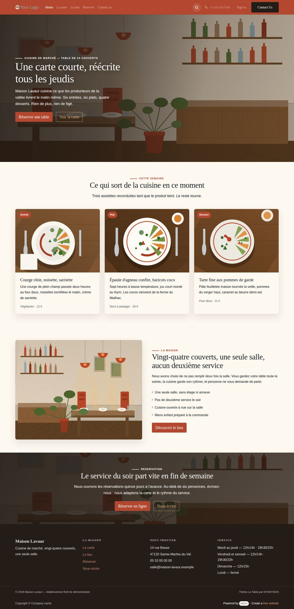
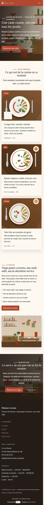

La plupart des sites de restaurant sont un thème d'entreprise recoloré, avec une photo de burger achetée sur une banque d'images. Celui-ci est dessiné pour une salle : terre cuite, crème, olive sombre, titrage serif, et une carte tarifée qui se met à jour en trois clics dans l'éditeur Odoo.
Une carte courte, réécrite tous les jeudis
Ce qui sort de la cuisine en ce moment
Vingt-quatre couverts, une seule salle, aucun deuxième service
Le service du soir part vite en fin de semaine


Toutes les sections sont construites sur la grille Bootstrap d'Odoo : la mise en page se réorganise seule sur téléphone et tablette, sans réglage supplémentaire. Les captures de cette fiche sont des rendus réels du thème installé, pas des maquettes.
Le débordement horizontal est vérifié à 414 px de large sur chaque page livrée.
| Contrôle | Résultat |
|---|---|
| Installation sur base vierge Odoo 19 | sans erreur |
Compilation du SCSS (bundle web.assets_frontend) | sans erreur |
| Rendu HTTP de chaque page livrée | 200 |
| Contrastes de la palette principale | WCAG AA |
| Compatibilité branche de développement d'Odoo | auditée, aucune rupture d'API |
Un thème de restaurant qui ressemble à un restaurant. Terre cuite, crème et olive sombre, titrage serif, quatre blocs pour monter une page d'accueil crédible.
gratuit — LGPL-3 — licence LGPL-3, sans restriction.
Éditeur : DYONYSOS — dyonysos.fr — support : welcome@dyonysos.fr
Contenu de démonstration entièrement fictif. Toutes les illustrations sont générées par programme : aucune photographie tierce, aucune marque tierce, aucun thème existant copié ou adapté.